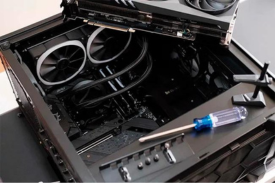

ABOUT ME
Hello there!!! my name is Santiago Romero, i'm 23 years old and i'm a first year student of TSDS. This section of my portfolio exist so that you can know me better, including my aspirations and ambitions surrounding my carrer. I've always been a very curious person, and even more so with things related to technology in general, so as I got older I started working with computers in all sorts of ways, including maintenance, troubleshooting and building from scratch, even now I still do this sort of thing whenever there's an opportunity. It's this interest in the world of IT that led me to study TSDS, i want to take my knowledge to a professional level and at the same time make a living out of it. My biggest ambition for my career is to become a Senior Back End Developer with lots of experience, mainly so that I can take on big projects that would test my abilities and coding skills. To conclude this small description of myself, I'd like to say that I'm an extremely responsible person who is always looking for new challenges and learning new things.
MY SKILLS
- PC architecture knowledge
- Knowledge of different operating systems.
- Software knowledge
- HTML and CSS
MY PROJECTS
This is a list of the projects i've been involved in:
Building computers for personal use
From gaming to everyday use to office computing, this includes choosing the right specifications for each use case.
Personal computer maintenance (including troubleshooting)
This includes all types of problems (software and hardware) that can interfere with the normal use of a PC.
Maintenance of LAN servers for data storage and LAN networks
Including all types of connection issues (credentials, logins, passwords, etc.), hardware-related issues and storage solutions.

Web application maintenance via hosting
It refers to all the work that goes into keeping the application online and running, as well as backing up all the information in case there is a problem with the main server.